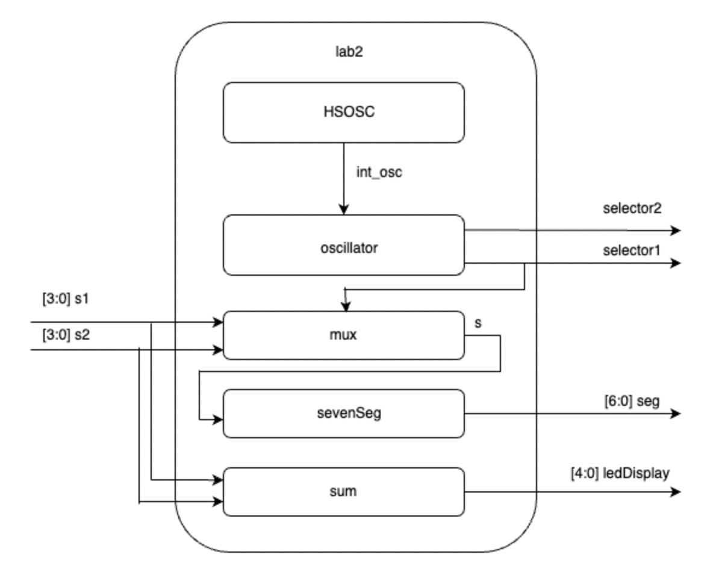
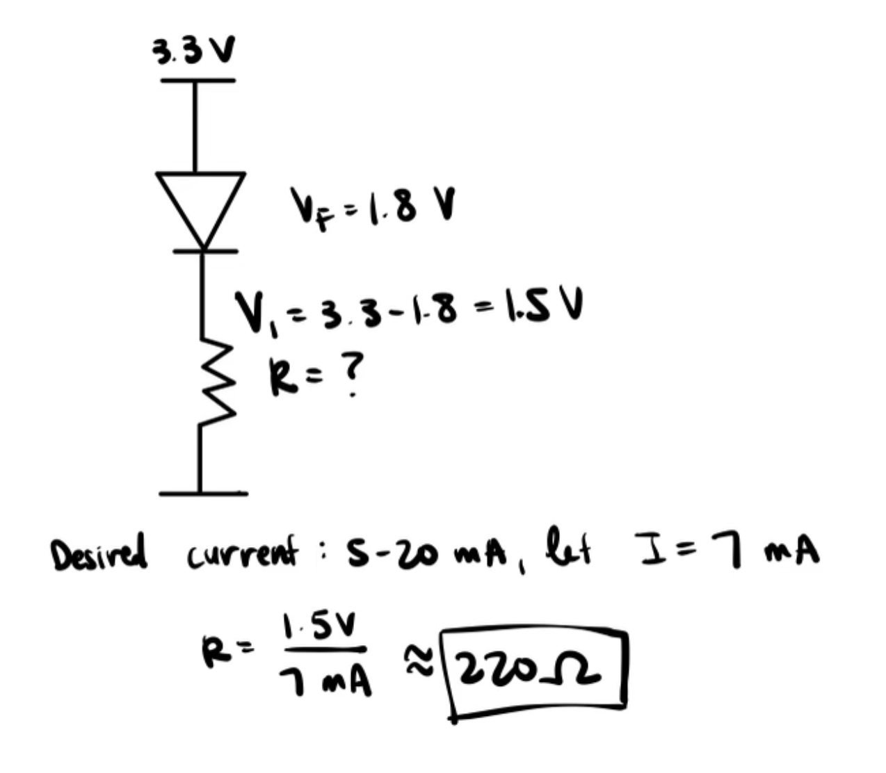
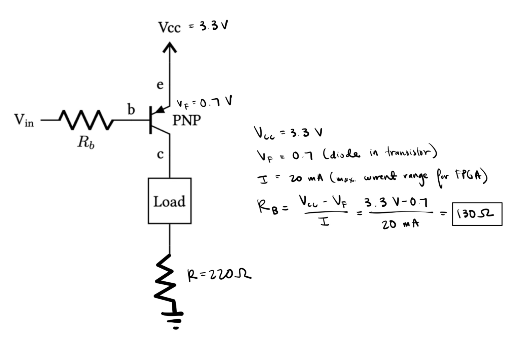
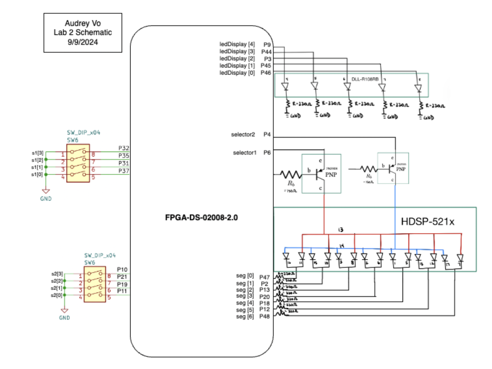
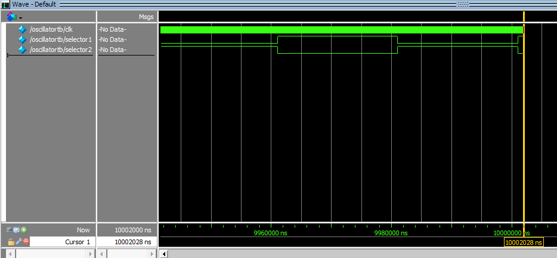
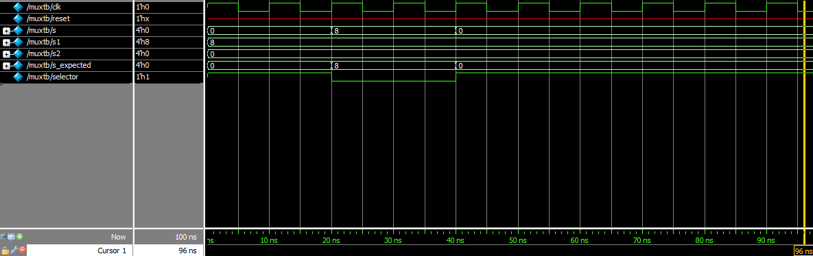
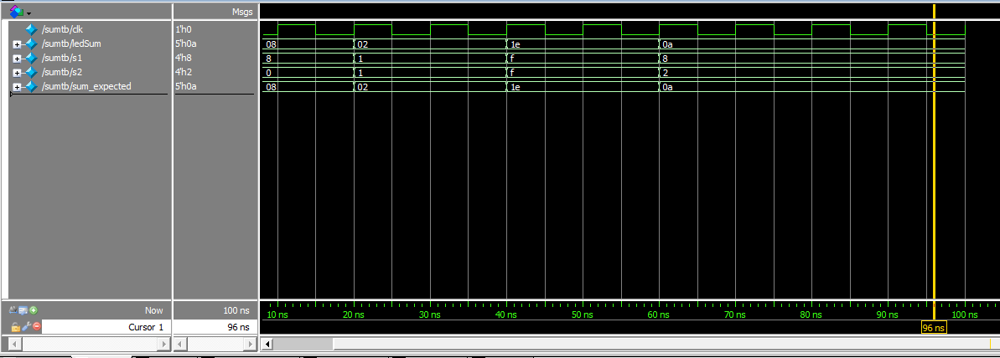
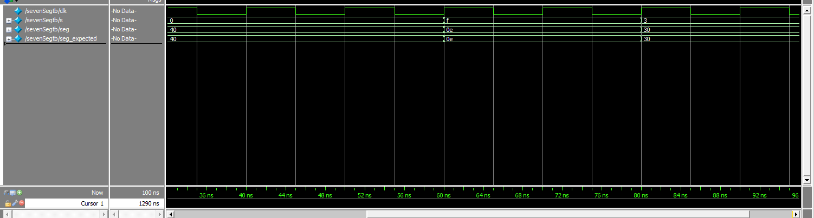

Lab 2: Multiplexed 7-Segment Display
Number of Hours Spent on Lab: 11 hours
Main Goals
The main goals of this lab were to use a time-multiplexing schematic to drive 2 separate 7 segement LED displays with a single set of pins on the FPGA and Verilog code. In addition, a transistor was required to use in order to drive larger currents from the FPGA pins to power the LED displays. An additional LED display was also used to report the sum of the 2 7 segement LED displays in binary format. Finally, a function testbench needed to be created in ModelSim to test the System Verilog code and ensure that each of the modules created worked as expected.
Design Approach
System Verilog Design
The System Verilog code created consisted of an oscillator submodule that would return alternating values used to turn the transistors on and off. This submodule utilized an internal high speed oscillator running at 2.4kHz, so that the values displayed on the LED are going fast enough that it looks like the values are being displayed simultaneously. These alternating bits are inputed into a mux that will output the desired switch input used between the two switch inputs assigned to the board. This desired switch input will then be fed into the sevenSeg display code used in Lab 1 that will output the desired values to the 7 segment displays.

7 Segment Circuit Design
Since there are 2 segments that will be alternating between two digits with the same set of FPGA pins, a transistor was needed to control whether each of the digits should display an LED value or if it should be turned off completely. Since the LED display used was a common anode, we could connect a PNP transistor to drive the common anode’s current to high when it is on or low when it is off. For the display, that means pins 13 and 14 were each connected to their own transistor’s output. I then connected both of the LED segments respective outputs to the same FPGA pins. The various pins that controlled the display were connected to the FPGA board using 220 Ohm resistors in order to achieve 7 mA of current.

Transistor Circuit Design
Because the LED display used was a common anode display, a PNP transistor was needed in order to drive the current high. The emitter of the circuit was connected to the FPGA pin that oscillated between low and high values determining whether or not the circuit was turned on. When values were low, current from the base voltage would be high and flow through the LED load to turn it on. A base resistor was needed to connect the 3.3 V to the base of the transistor so that not too much current is drawn from the FPGA pins. The calculated resistor value needed for the base was 130 Ohms, but 150 Ohms was used instead since that was readily available from the stockroom.

LED Sum Circuit Design
The LED display used was grounded with 220 Ohm resistors for the same reason the seven segment display was. The input of this circuit was the output of combinational logic written in System Verilog.
Pin Assignment
Finally, the pins from the FPGA needed to be correctly assigned to the switches, Leds, and 7-segment display on the board. The s, seg, and led variables defined in System Verilog were assigned to physical pins on the board shown as the following:
| variable | pin # |
|---|---|
| s1[0] | 37 |
| s1[1] | 31 |
| s1[2] | 35 |
| s1[3] | 32 |
| s2[0] | 11 |
| s2[1] | 19 |
| s2[2] | 21 |
| s2[3] | 10 |
| ledDisplay[0] | 46 |
| ledDisplay[1] | 45 |
| ledDisplay[2] | 3 |
| ledDisplay[3] | 44 |
| ledDisplay[4] | 9 |
| seg[0] | 47 |
| seg[1] | 2 |
| seg[2] | 13 |
| seg[3] | 20 |
| seg[4] | 18 |
| seg[5] | 12 |
| seg[6] | 48 |
| selector1 | 6 |
| selector2 | 4 |

Testing Approach
In order to test the design, the System Verilog code was opened in ModelSim. A set of additional testbench files in System Verilog were created to test each of the submodules’s functionality.
Oscillator Testing
In order to check if the oscillator function was working properly, a clock signal was generated with 1 timestep. A dut (device under test) was then instantiated calling the oscillator function. The testbench was then run for 1 M ns. When looking at the output of the testbench in the Wave view, it shows that the output of the oscillator changes value every 10000 ns, while the internal clock is oscillating at a much faster rate as expected.

Mux Testing
In order to check if the mux function was working properly, a clock signal was generated with 10 timestep. A dut (device under test) was then instantiated calling the mux function. At the start of the simulation, input values for switch inputs 1 and 2 were set to 8 and 0 respectively. A selector was then set to 1 so that the first switch value was chosen. A separate variable containing the expected output was created so that it can be compared with the output of the mux. After 2 more clock signals, the selector’s value was changed to 0 so that the output of the mux is changed as well. In the simulation’s Wave view, the output of the mux (s) and the expected value of the mux (s_expected) match each other’s values.

Sum Testing
In order to check if the sum function was working properly, a clock signal was generated with 10 timestep. A dut (device under test) was then instantiated calling the sum function. At the start of the simulation, input values for switch 1 and 2 were set to various values, along with a new variable that was the expected sum of the two switch inputs. After running the simulation for 2 clock signals, the input values of the switches and the expected sum were updated to different values. In the simulation’s Wave view, it can be seen that the expected sum value matched the output of the sum module as desired. Thus, the module behaved as expected.

Seven Segment Display Testing
In order to check if the Seven Segement display function was working properly, a clock signal was generated with 10 timestep. A dut (device under test) was then instantiated calling the sum function. At the start of the simulation, input values for the switch were set to various values. The expected segment display were also set. After running the simulation for 2 clock signals, the input values of the switch and the expected output were updated to different values. In the simulation’s Wave view, it can be seen that the expected display value matched the output of the sevenSeg module as desired. Thus, the module behaved as expected.

Design Requirements
After testing the design on both ModelSim and physically, I can confirm that it meets all the requirements.